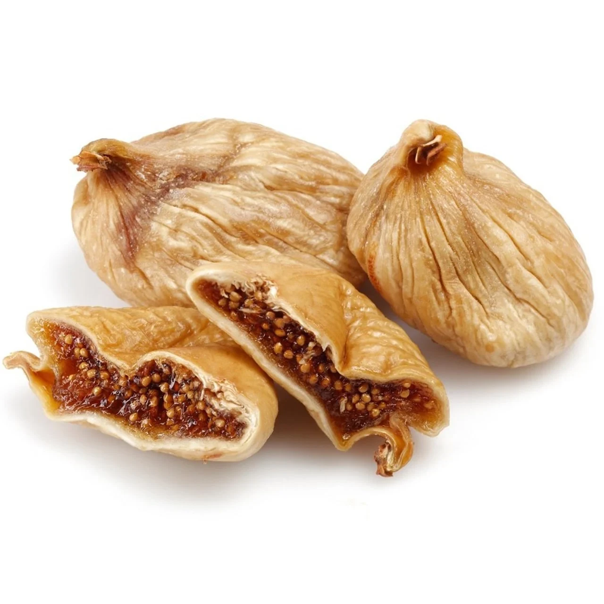
Kuru incir
Aydın, Ege Bölgesi
Güneşte kurutulup Lerida’dan Protoben’e elde sekiz sınıfa ayrılan bütün incirler. Yumuşak, bal tadında ve katkısız.
Formatlar: 200 g ve 500 g perakende · 5 kg toplu tüketim · 10 kg dökme
Uzmanlık ürünlerimizi Türkiye’de kendimiz kurutup paketliyoruz. Tüm kaliteleri perakende, toplu tüketim ve sanayi formatlarında, talebe göre özel markayla sunuyoruz.
Her ürünün kaliteleri, kalibreleri ve tüm teknik bilgileri kendi sayfasında.

Aydın, Ege Bölgesi
Güneşte kurutulup Lerida’dan Protoben’e elde sekiz sınıfa ayrılan bütün incirler. Yumuşak, bal tadında ve katkısız.
Formatlar: 200 g ve 500 g perakende · 5 kg toplu tüketim · 10 kg dökme
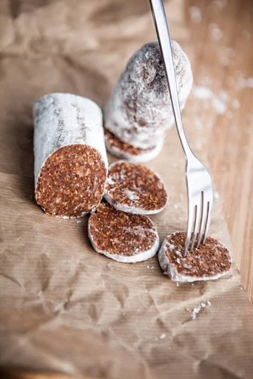
İmza ürünümüz
Preslenmiş incir hamuru baharat ya da kuruyemişle harmanlanır, dilimlenebilecek kıvama gelene kadar dinlendirilir. Altı çeşit, hepsi 180 g ve ilave şekersiz.
Formatlar: 180 g çubuk · altı çeşit · karma koli
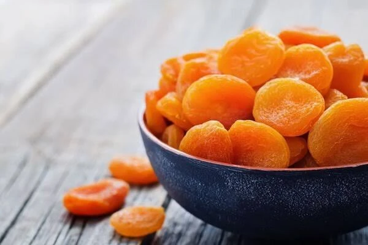
Malatya, Doğu Anadolu
Kükürtlü sarı ve doğal koyu tiplerde, 1 numaradan 6 numaraya boylanmış, yumuşak dokulu ve çekirdeksiz kayısı yarımları.
Formatlar: 200 g ve 500 g perakende · 5 kg toplu tüketim · 12,5 kg dökme
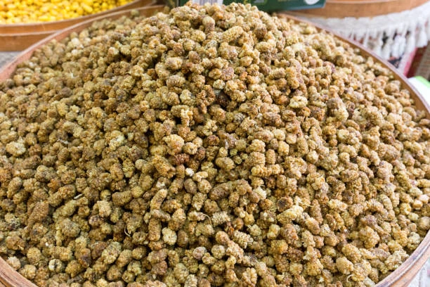
Anadolu
Dalında tam olgunlaşır, hiçbir işlem görmeden güneş ve rüzgârda kurutulur. Tesisimizde fümigasyon ve temizleme sonrası paketlenir.
Formatlar: 12,5 kg dökme · istenen gramaj
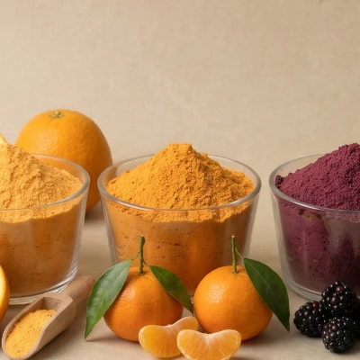
7 çeşit
Yedi meyvenin tozu: incir, portakal, mandalina, böğürtlen, yaban mersini, kivi ve muz. Gıda sanayiinde aroma, doğal renk ve tatlılık için kullanılır.
Teknik özellikler ve ambalaj seçenekleri için bize yazın.
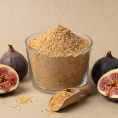
Kurutulmuş incirin öğütülmesiyle elde edilir. Açık karamel renginde ve incirin kendi tatlılığında; fırıncılıkta, bar ve granola karışımlarında şekerin bir bölümünün yerini alır.
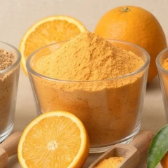
Portakaldan elde edilen parlak turuncu toz. Belirgin narenciye aroması ve hafif ekşiliğiyle içecek karışımlarında, tatlı kremalarında ve baharat harmanlarında kullanılır.
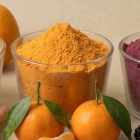
Portakala göre daha yumuşak, daha tatlı bir narenciye notası verir. Çay ve içecek karışımlarında, bisküvi ile dondurma aromalandırmasında tercih edilir.
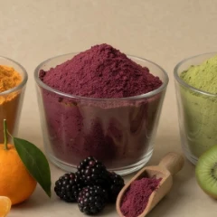
Koyu mor-kırmızı rengini böğürtlenin kendisinden alır. Yoğun orman meyvesi tadıyla hem aroma hem doğal renk için kullanılır: yoğurt, smoothie ve tatlı kaplamaları.
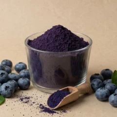
Canlı mor rengi ve tatlı-ekşi dengesiyle öne çıkar. Kahvaltılık gevrek, bar, süt ürünleri ve takviye karışımlarında kullanılır.
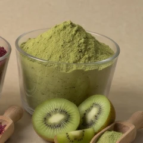
Kivinin çekirdeklerinden gelen benekli yeşil rengini korur. Taze ve hafif ekşi tadıyla içecek, dondurma ve tatlı uygulamalarına girer.
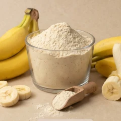
Açık krem renginde, yumuşak ve doğal tatlılıkta. Süt tozu karışımlarında, smoothie ve fırın ürünlerinde hem tat hem kıvam için kullanılır.
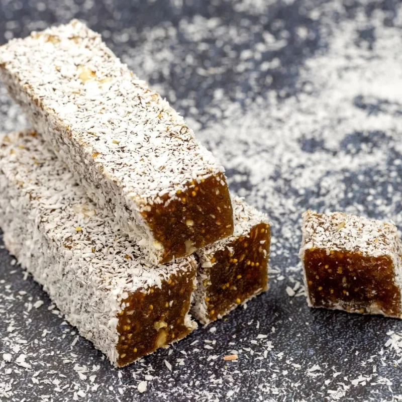
4 ambalaj
Kuru incir önce ezme haline getirilir, içine iri fındıklar yedirilir, dışı hindistan cevizine bulanır. Koruyucu ya da raf ömrünü uzatan hiçbir katkı yok; tatlılığı incirin kendi şekerinden geliyor. Geleneksel olarak kahve yanında ikram edilir, ihracat pazarlarında “Turkish fig delight” adıyla satılır. Fındık içerir.
Ambalajlar: 500 g metal kutu · 500 g karton kutu · 340 g · 150 g
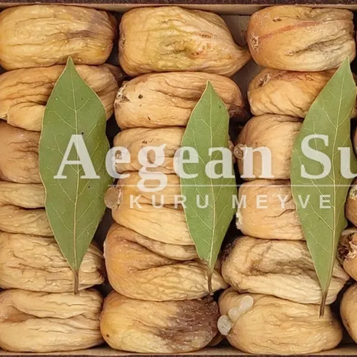
Paketleme hattı bize ait; bu yüzden bir palet tesisten market rafına hazır perakende paket olarak da, işlenmek üzere sade sanayi kolisi olarak da çıkabilir.
Biz bir mağaza değil, toptan tedarikçiyiz. Buradaki her şey konteyner yükleri, tekrarlayan programlar ve bunlara eşlik etmesi gereken evrak düzeni için tasarlandı.
Standart olarak 5 kg, 10 kg ve 12,5 kg iç torbalı koliler; talebe göre ahşap kasa. ISPM 15 ısıl işlemli paletlere istiflenir ve deniz yolu için streçlenir.
Doypack, bandrol ve kolileri sizin tasarımınızla basar; barkod ve çok dilli besin değeri tablolarını hazırlar, tekrar baskılar için kalıpları saklarız.
Menşe şahadetnamesi, sağlık sertifikası, analiz raporu ve bitki sağlık sertifikası her sevkiyatla birlikte gider. Uygun hâllerde ATR ve EUR.1 düzenlenir.
Stoklu formatlarda tek paletten tam konteynere kadar. Ürün gruplarını aynı yüklemede birleştiren karma konteynerleri de memnuniyetle hazırlıyoruz.
EXW, FOB İzmir, CIF ve DDP. İzmir’den deniz yolu, Avrupa’ya karayolu parsiyel, numune ve acil tamamlamalar için hava kargo.
Kalibre, nem, SO₂ limiti, ambalaj: spesifikasyonunuzu gönderin; parti parti neyi tutturabileceğimizi yazılı olarak teyit edelim.
Dört kuru meyvenin menşe, kalite ve raf ömrü yan yana.
| Ürün | Menşe | Kaliteler | Raf ömrü |
|---|---|---|---|
| Kuru incir | Aydın | Lerida, Protoben, Bağlama, Garland | 12 ay |
| İncir salamı | Aydın inciri, Atina üretimi | 6 çeşit (baharatlı, bademli, fıstıklı ve diğerleri) | 12 ay |
| Kuru kayısı | Malatya | Kükürtlü 1–6 numara, doğal koyu, organik | 18 ay |
| Kuru dut | Anadolu | Bütün, güneş ve rüzgârla kurutulmuş | Talebe göre |
Kullanım alanını söyleyin; kalibre önerelim ve ikisinden numune gönderelim.